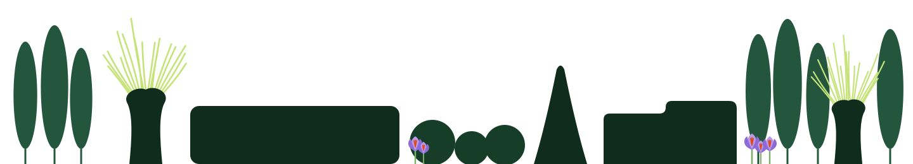

Tuinaanleg
Een nieuwe tuin bij een nieuwbouw, of een bestaande tuin die helemaal opnieuw begint. Mathieu legt hem aan, met oog voor wat u wil en wat de plek aankan.

Zo verloopt een aanleg
-
Kennismaking
U vertelt wat u voor ogen hebt. Mathieu komt kijken naar de grond, de ligging en wat er al staat.
-
Voorstel
U krijgt een duidelijk voorstel: wat er gebeurt en wat het kost.
-
Aanleg
Mathieu gaat aan de slag en houdt u op de hoogte tot alles klaar is.
-
Onderhoud
Wilt u dat de tuin mooi blijft? Mathieu neemt ook het onderhoud op zich.